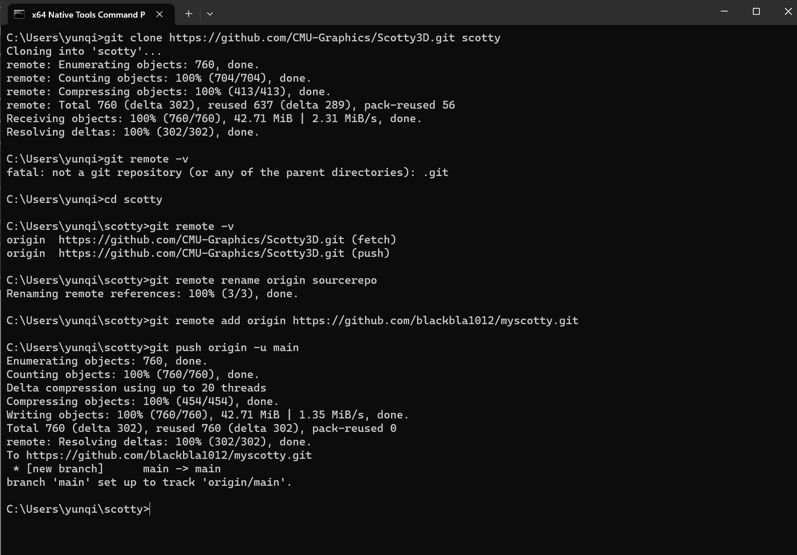
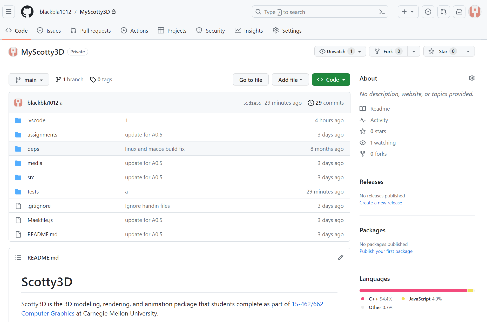
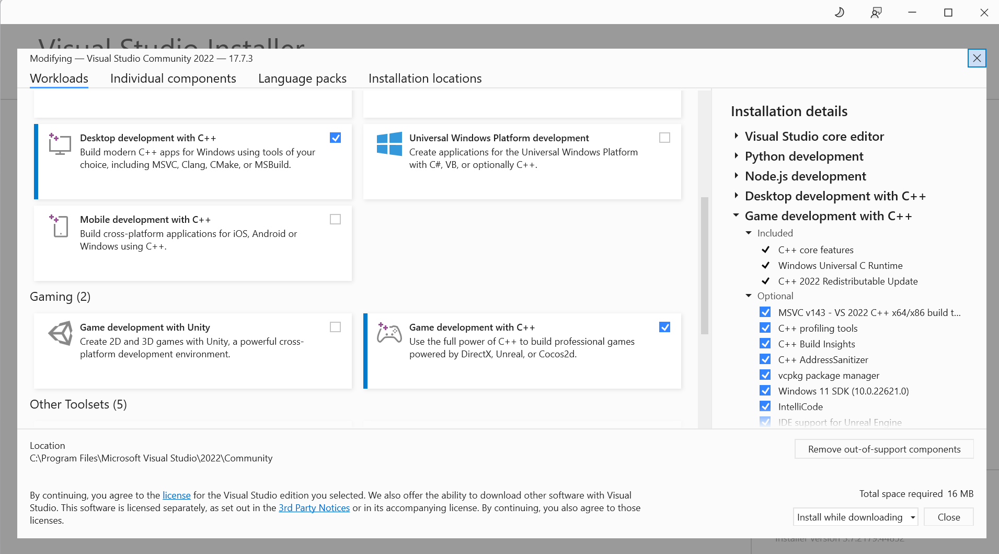
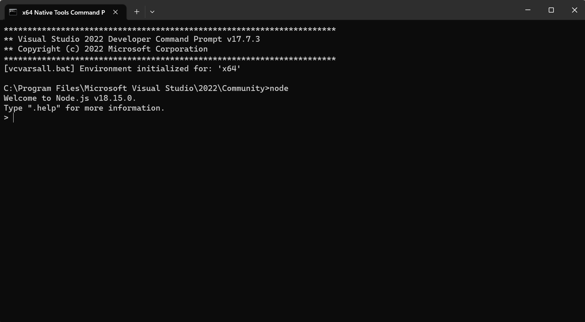
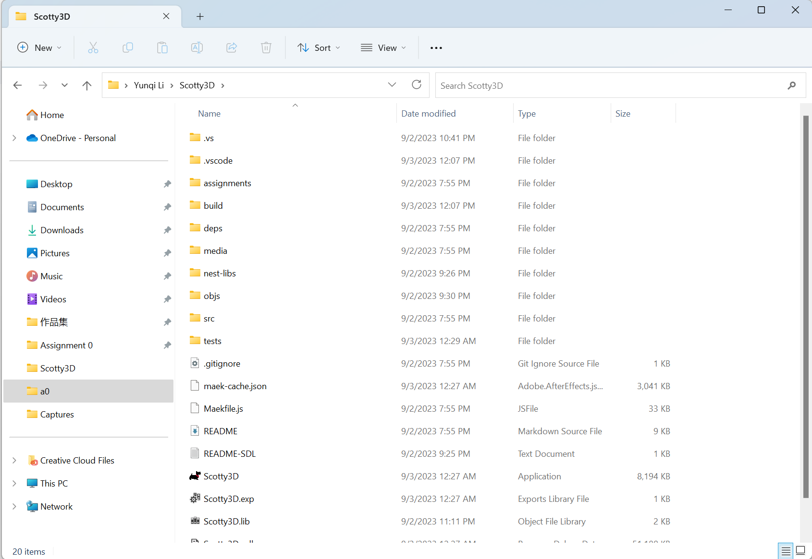
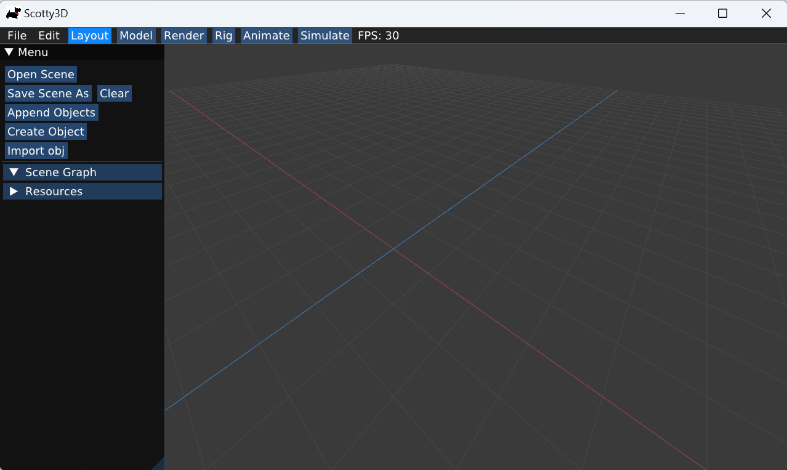
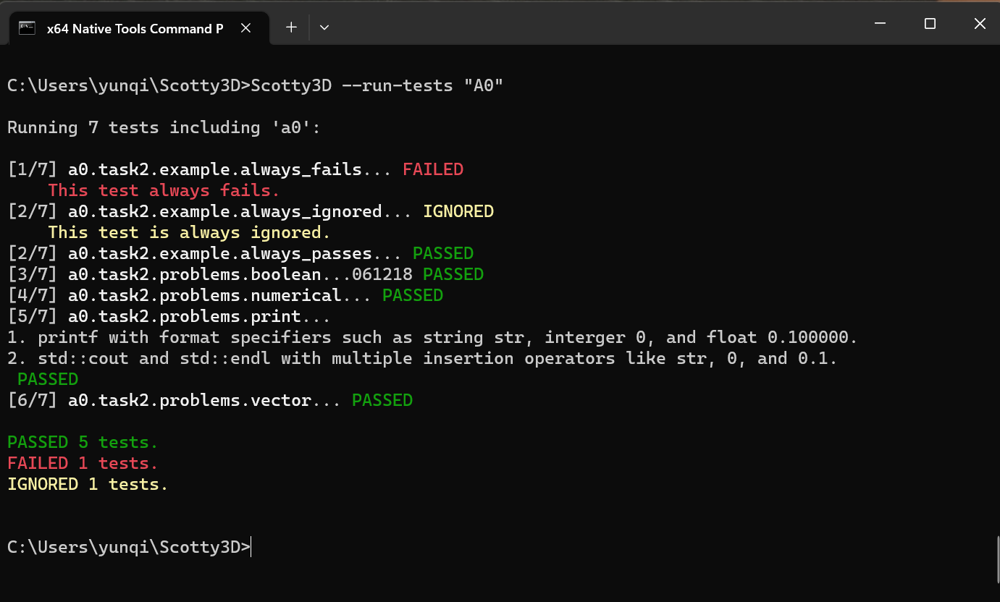

**Assignment 0 Report**
AndrewID: yunqili
(##) About this template
* Structure your report using numbers and titles following those of the assignment.
* Replace reference images with your own screenshots or renders when applicable.
* Include descriptions of any encountered problems and the time you spent on each task.
(##) A0T1 - 1.5 hours
Step 1: Clone

or

Step 2: General Setup
Visual Studio:

Node:

Nest-libs:

Step 3: Build and Run


(##) A0T2 - 2 hours
You do not need any screenshots for this task. Your completion will be graded based on your `test.a0.task2.problems.cpp` file.
(##) A0T3 - 2 hours
You do not need any screenshots for this task. Your completion will be graded based on your `src` submission.
(##) Feedback
Spent a lot of time on A0T3 to read the validate() function. Actually I was feeling good to do that because after reading this, I uderstand the lambda function and iterator better.
Both T2 and T3 have a good guidance for me to learn C++.